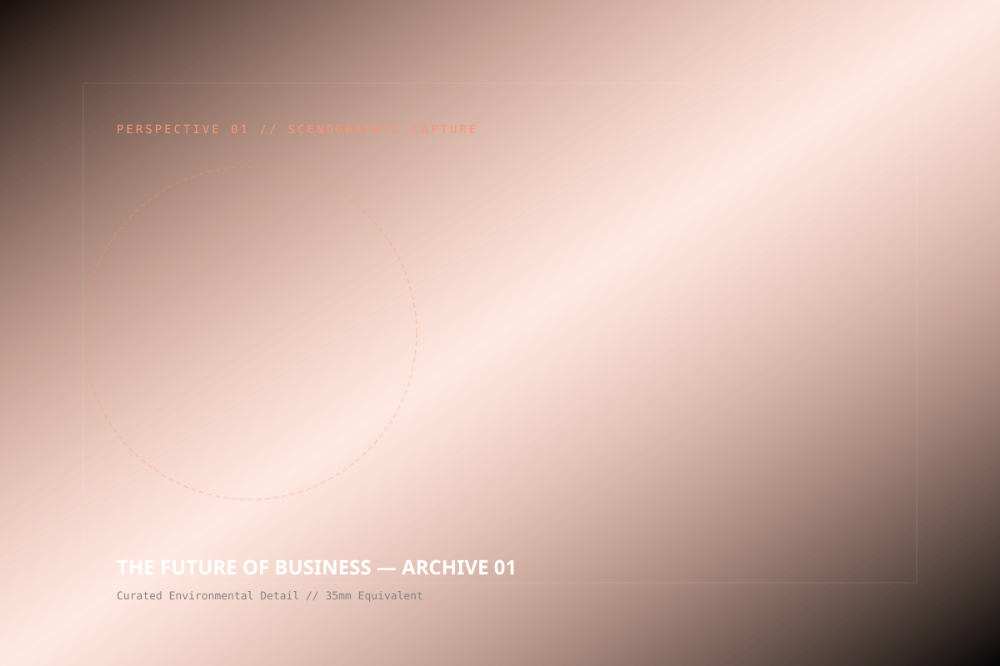
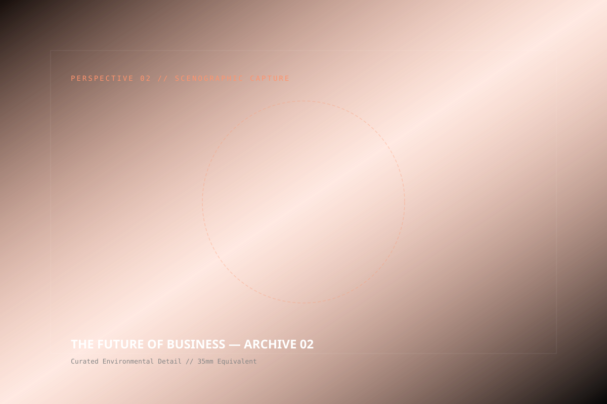
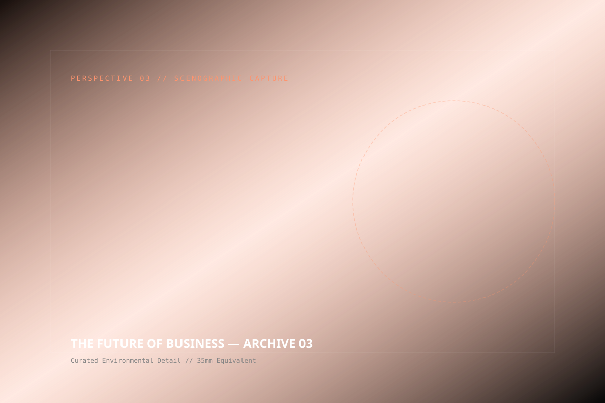

THE FUTURE
OF BUSINESS
THE CHALLENGE
Traditional high-finance economic forums are notoriously sterile, transactional, and exhausting. Monotonous PowerPoint decks, distance between speakers and participants, and rigid proscenium stages inhibit the candor and human connection necessary to commit institutional capital.
Our task was to completely dismantle the corporate summit format, engineering an environment where institutional trust could form spontaneously and decisive cross-border investments could occur naturally.
THE SOLUTION
We eliminated stage prosceniums altogether. In their place, we constructed tiered conversation pits finished in sustainable matte Rwandan timber and living biophilic plant walls.
A colossal suspended algorithmic sculpture rendered continent-wide capital flows and tech venture rounds in real-time GLSL visuals. Acoustic micro-lounges equipped with active sound-cancelling fields offered secure, intimate enclaves for high-stakes deal negotiations.
OUR APPROACH
Strategy
Dismantling corporate hierarchy to maximize spontaneous executive collision.
Concept
The 'Transparent Agora' — zero barriers between high-net-worth capital and early-stage innovators.
Design
Acoustic micro-lounges, matte black monolithic LED monoliths, and circadian light shifts.
Production
Zero-waste build utilizing 92% locally sourced recyclable timber and sustainable textiles.
Experience
Chatham House-rule amphitheaters with ambient sound-masking for confidential dealmaking.
Content
Dynamic digital white-papers generated in real-time from breakout session discussions.
SPATIAL DIRECTORS


THE POWER OF CIRCULAR DIALOGUE
By removing elevated podia, conversations shifted instantly from rehearsed monologues to authentic interrogations. Sound masking created bubbles of privacy in a vast atrium, while circadian lighting subtly refreshed audience attention over grueling 10-hour agendas.

SPATIAL PERSPECTIVES



“In twenty years of attending international economic forums, I have never witnessed an environment that generated so much candor, momentum, and decisive capital allocation.”